Vite & Gourmand est un traiteur bordelais spécialisé dans les événements type mariages ou séminaires. Ce sujet était à la base proposé par Studi pour l'ECF ; j'ai choisi de le réutiliser pour ce dossier professionnel en l'adaptant : j'y ai ajouté Docker pour la conteneurisation, MongoDB pour les stats de navigation, et j'ai refait la gestion des rôles avec Symfony Security pour coller au nouveau référentiel.
| Couche | Technologie | Version |
|---|---|---|
| Backend | PHP / Symfony | PHP 8.3 / Symfony 7.x |
| ORM | Doctrine ORM | 3.x |
| Base relationnelle | MySQL | 8.0 |
| Base documentaire | MongoDB | 7.0 (statistiques) |
| Frontend | Twig / Bootstrap / Bootstrap Icons | Bootstrap 5.3 |
| JavaScript | Vanilla JS (ES6+), modules natifs | — |
| Conteneurisation | Docker Compose | — |
| Profil | Accès | Actions principales |
|---|---|---|
| Visiteur | Public | Consulter les menus, contacter le traiteur |
| Client | Connecté | Passer une commande, suivre son statut, laisser un avis |
| Employé | ROLE_EMPLOYE | Gérer les commandes, traiter les avis |
| Administrateur | ROLE_ADMIN | Gérer menus, utilisateurs, horaires, statistiques |
| Rôle | Mot de passe | |
|---|---|---|
| Administrateur | jose@vitegourmand.fr | Admin@2024! |
| Employé | julie@vitegourmand.fr | Employe@2024! |
| Client | (créé via inscription) | — |
Pour le maquettage j'ai travaillé en deux temps : d'abord des wireframes en gris pour poser la structure sans me perdre dans les couleurs, puis les mockups avec la vraie charte. Je me suis concentré sur les trois pages les plus complexes côté interface : l'accueil, le catalogue des menus et la page de commande.
Les wireframes sont uniquement en gris — pas de couleurs, pas de typo définitive. Je voulais d'abord valider la répartition des blocs et la navigation avant de me lancer dans le design.
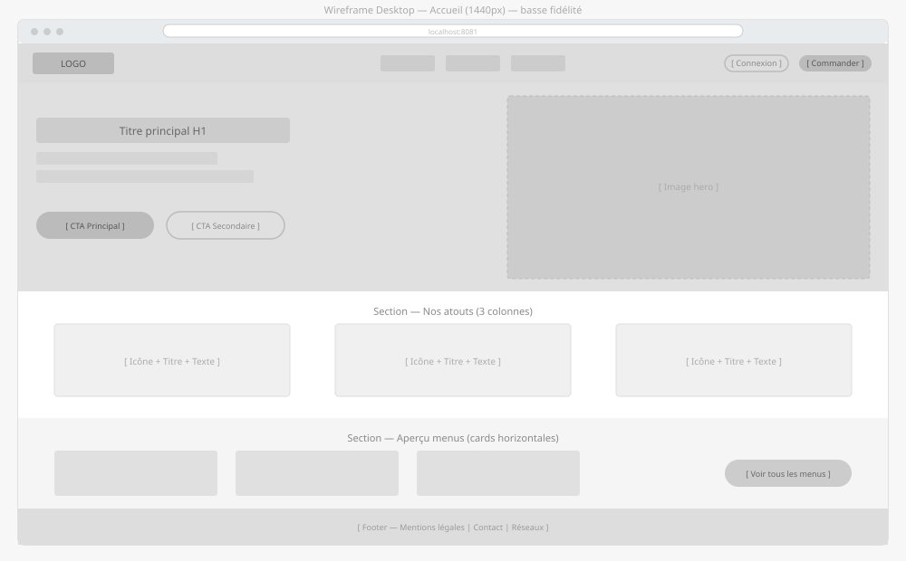
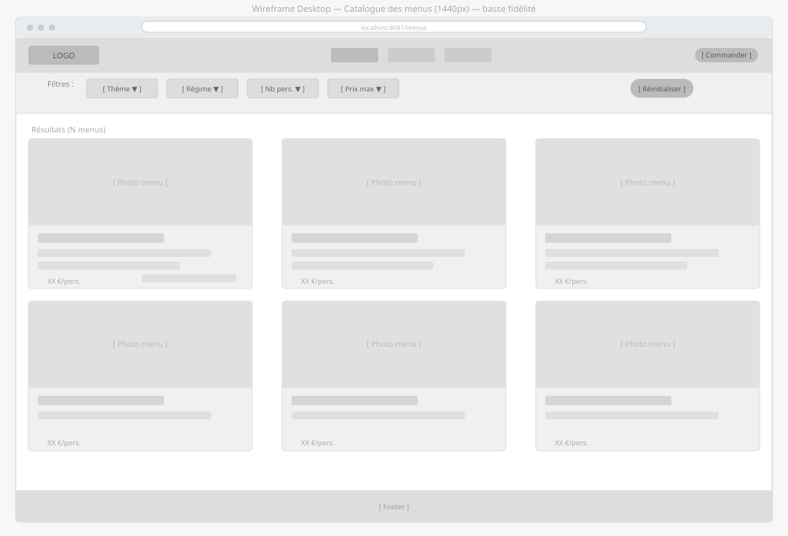
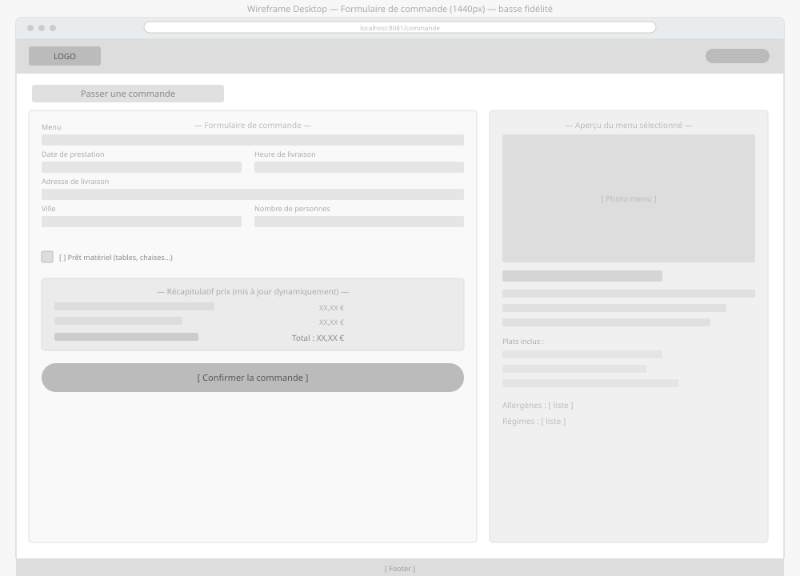
Sur mobile j'ai dû repenser la mise en page : les cards du catalogue passent en colonne unique, les filtres se replient dans un accordéon pour pas surcharger l'écran, et le formulaire de commande qui était en deux colonnes sur desktop devient entièrement vertical.
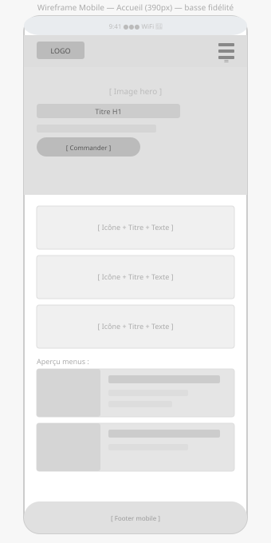
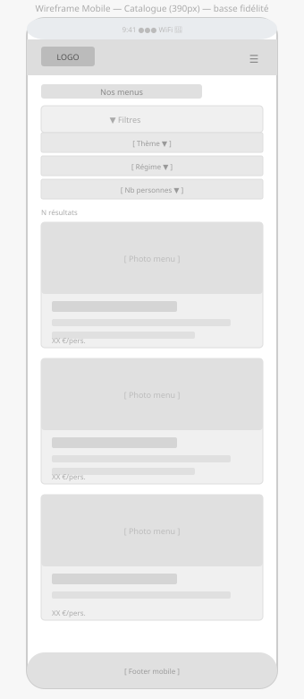
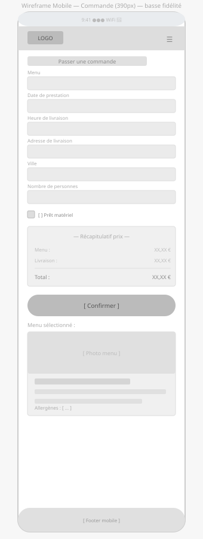
Pour les mockups j'ai choisi un bordeaux #800020 comme couleur principale — cohérent avec l'univers traiteur haut de gamme. La police Aclonica en titre donne un côté élégant sans être trop chargé, et j'ai gardé un rose #BE7D8D pour les accents secondaires.
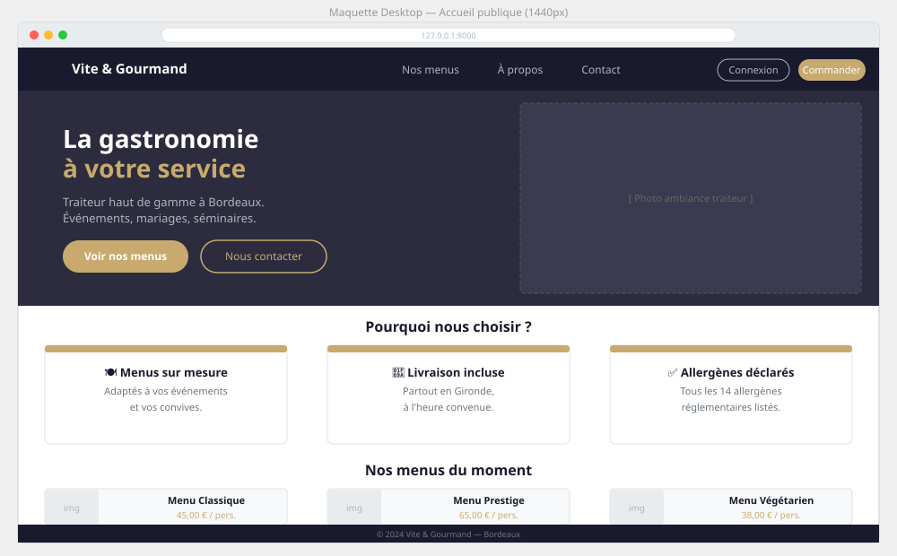
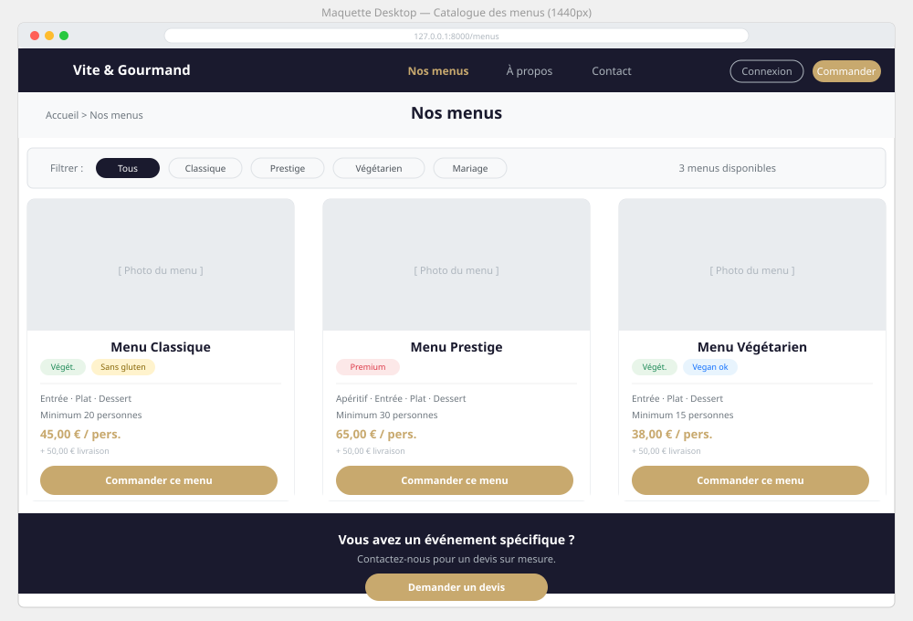
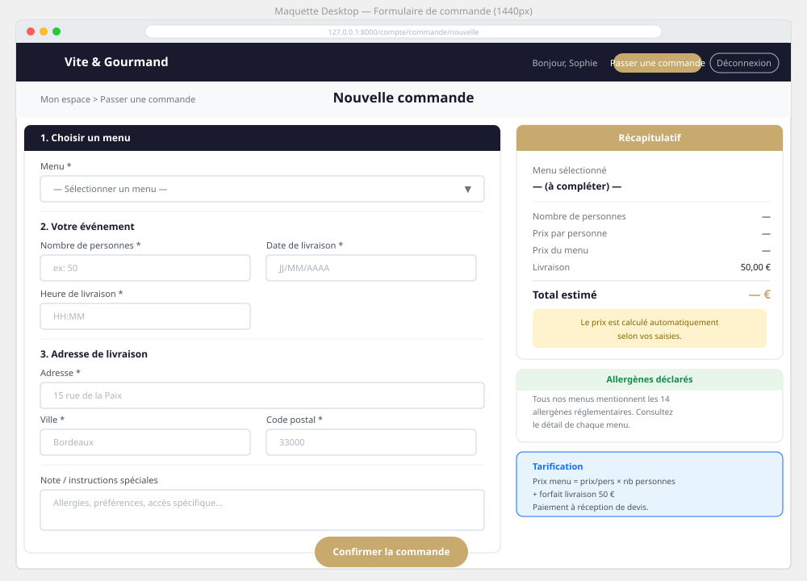
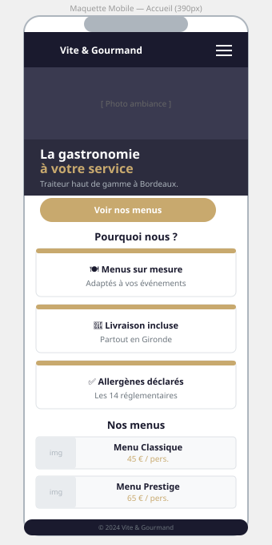
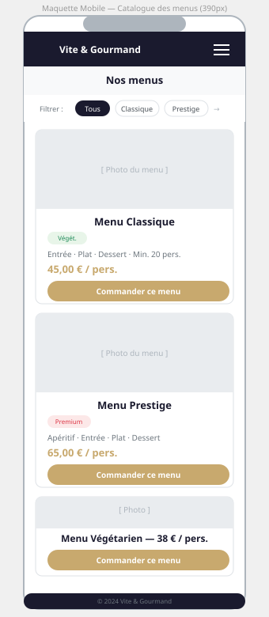
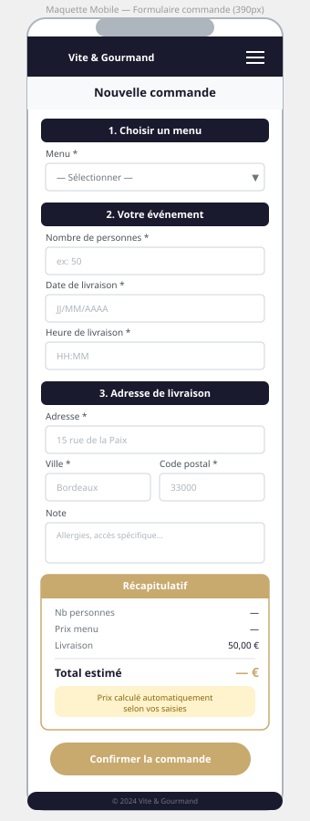
J'ai centralisé tout le HTML commun dans base.html.twig. Chaque page étend ce template et n'écrit que son contenu dans les blocs title et body. J'ai mis le <header> avec la nav, le <main> pour le contenu principal, et le <footer> — les balises sémantiques de base. Le bloc javascripts permet aux pages qui en ont besoin d'ajouter leurs propres scripts sans les charger partout.
<!DOCTYPE html>
<html lang="fr">
<head>
<meta charset="UTF-8">
<meta name="viewport" content="width=device-width, initial-scale=1.0">
<title>{% block title %}Vite & Gourmand{% endblock %} — Traiteur Bordeaux</title>
<!-- Fonts, Bootstrap 5.3, Bootstrap Icons -->
{% block stylesheets %}{% endblock %}
</head>
<body>
<!-- Navigation principale ─────────────────────── -->
<header>
<nav class="navbar navbar-expand-lg navbar-veg" aria-label="Navigation principale">
<div class="container">
<a class="navbar-brand" href="{{ path('app_home') }}">
<img src="/images/logo.svg" alt="Vite & Gourmand" class="logo">
</a>
<button class="navbar-toggler" type="button"
data-bs-toggle="collapse" data-bs-target="#navMenu"
aria-controls="navMenu" aria-expanded="false"
aria-label="Ouvrir le menu">
<span class="navbar-toggler-icon"></span>
</button>
<div class="collapse navbar-collapse" id="navMenu">
<ul class="navbar-nav ms-auto">
<li class="nav-item">
<a class="nav-link" href="{{ path('app_menus') }}">Nos menus</a>
</li>
{% if app.user %}
<li class="nav-item">
<a class="nav-link" href="{{ path('app_commande_new') }}">Commander</a>
</li>
{% endif %}
</ul>
</div>
</div>
</nav>
</header>
<!-- Contenu principal ───────────────────────────── -->
<main id="veg-main">
{% for type, messages in app.flashes %}
<div role="alert" class="alert alert-{{ type }}">
{% for msg in messages %}{{ msg }}{% endfor %}
</div>
{% endfor %}
{% block body %}{% endblock %}
</main>
<!-- Pied de page ────────────────────────────────── -->
<footer class="footer-veg">
<div class="container">
<p>© 2025 Vite & Gourmand — Traiteur Bordeaux</p>
<nav aria-label="Liens légaux">
<a href="{{ path('app_mentions') }}">Mentions légales</a>
<a href="{{ path('app_contact') }}">Contact</a>
</nav>
</div>
</footer>
{% block javascripts %}{% endblock %}
</body>
</html>
role="alert" sur les flash messages lors de mon ECF et j'avais eu un retour là-dessus. Cette fois je l'ai bien remis : ça permet aux lecteurs d'écran d'annoncer les messages de succès ou d'erreur quand ils apparaissent.
Bootstrap est mobile-first donc j'ai suivi la même logique pour mes styles custom : d'abord les règles de base pour mobile, puis les @media pour les écrans plus larges. Par exemple sur la section hero, l'image est masquée sur mobile pour alléger la page et réapparaît à partir de 992 px :
/* ── Variables CSS globales ───────────────────── */
:root {
--veg-primary: #BE7D8D;
--veg-dark: #800020;
--veg-secondary: #E8D1D7;
}
/* ── Style de base (mobile en premier) ─────────── */
.hero-content {
padding: 2rem 1rem;
text-align: center; /* centré par défaut sur mobile */
}
.hero-image {
display: none; /* image masquée sur mobile pour alléger */
}
/* ── Tablette et plus (≥ 768 px) ───────────────── */
@media (min-width: 768px) {
.hero-content {
text-align: left; /* texte aligné à gauche sur desktop */
padding: 4rem 2rem;
}
}
/* ── Grand écran (≥ 992 px) ────────────────────── */
@media (min-width: 992px) {
.hero-image {
display: block; /* image réapparaît sur desktop */
}
}
/* ── Ajustement spécifique petits mobiles (< 576 px) */
@media (max-width: 575.98px) {
.hero .hero-content { text-align: center; }
.menus-filter { flex-direction: column; }
}
Sur la page de commande j'avais besoin que le récapitulatif de prix se mette à jour en temps réel, sans recharger la page. J'ai créé un endpoint Symfony /api/livraison-prix et j'appelle ça en fetch avec un debounce de 700 ms pour éviter de spammer l'API à chaque frappe clavier.
// assets/js/commande-prix.js
// Mise à jour dynamique du récapitulatif de prix via fetch
(function () {
// 1. Sélection des champs du formulaire
const adresseInput = document.querySelector('[name="commande[adresseLivraison]"]');
const villeInput = document.querySelector('[name="commande[villeLivraison]"]');
const menuSelect = document.querySelector('[name="commande[menu]"]');
const nbInput = document.querySelector('[name="commande[nombrePersonne]"]');
const detail = document.getElementById('recap-detail');
// Si la page ne contient pas ce formulaire, on sort
if (!villeInput) return;
let timer = null;
// 2. Formatage monétaire : 12.5 → "12,50 €"
function fmt(n) { return n.toFixed(2).replace('.', ',') + ' €'; }
// 3. Appel fetch vers l'API avec les paramètres du formulaire
function mettreAJour() {
const ville = villeInput.value.trim();
const adresse = adresseInput ? adresseInput.value.trim() : '';
const menuId = menuSelect ? menuSelect.value : '';
const nb = nbInput ? parseInt(nbInput.value) || 0 : 0;
if (!ville) { detail.style.display = 'none'; return; }
// Construction des paramètres de la requête GET
const params = new URLSearchParams({ adresse, ville, menuId, nbPersonnes: nb });
fetch('/api/livraison-prix?' + params)
.then(r => r.json())
.then(data => {
// 4. Injection sécurisée des prix via textContent (pas innerHTML)
if (data.prixLivraison === null) return;
document.getElementById('r-livraison').textContent = fmt(data.prixLivraison);
if (data.prixMenu !== null) {
document.getElementById('r-menu').textContent = fmt(data.prixMenu);
document.getElementById('r-total').textContent = fmt(data.total);
const redWrap = document.getElementById('r-reduction-wrap');
if (data.prixReduction > 0) {
document.getElementById('r-reduction').textContent = '- ' + fmt(data.prixReduction);
redWrap.style.display = 'inline';
} else {
redWrap.style.display = 'none';
}
}
detail.style.display = 'block';
})
.catch(() => {}); // Erreur réseau silencieuse — l'utilisateur garde le formulaire
}
// 5. Debounce : attendre 700 ms après la dernière frappe avant d'appeler l'API
function debounce() { clearTimeout(timer); timer = setTimeout(mettreAJour, 700); }
// 6. Écoute des événements
villeInput.addEventListener('input', debounce);
if (adresseInput) adresseInput.addEventListener('input', debounce);
if (menuSelect) menuSelect.addEventListener('change', mettreAJour);
if (nbInput) nbInput.addEventListener('input', debounce);
// 7. Préremplissage sur la page "modifier ma commande"
const data = document.getElementById('commande-data');
if (data && data.dataset.autostart) mettreAJour();
})();
Pour le formulaire de contact j'ai ajouté une validation JS simple : vérification du format email et que le message n'est pas vide. Les erreurs s'affichent dans des <span> dédiés sans rechargement de page.
// assets/js/contact.js — validation côté client
document.getElementById('contact-submit').addEventListener('click', function () {
const email = document.getElementById('contact-email').value.trim();
const msg = document.getElementById('contact-message').value.trim();
let ok = true;
// Réinitialisation des erreurs précédentes
document.getElementById('err-contact-email').textContent = '';
document.getElementById('err-contact-message').textContent = '';
// Contrôle de saisie : format e-mail
if (!email || !email.includes('@')) {
document.getElementById('err-contact-email').textContent = 'E-mail invalide.';
ok = false;
}
// Contrôle de saisie : message non vide
if (!msg) {
document.getElementById('err-contact-message').textContent = 'Le message est requis.';
ok = false;
}
if (ok) {
// Affichage du message de confirmation
document.getElementById('contact-success-email').textContent = email;
document.getElementById('contact-form').style.display = 'none';
document.getElementById('contact-success').style.display = 'flex';
}
});
Pour injecter les données dans le DOM j'utilise systématiquement textContent et jamais innerHTML. J'avais eu une mauvaise surprise en TP en utilisant innerHTML avec une valeur qui contenait des balises — elles s'étaient exécutées. Depuis je prends le réflexe textContent dès que je manipule des données venant de l'extérieur.
// ✅ CORRECT — textContent échappe automatiquement le HTML
document.getElementById('r-livraison').textContent = fmt(data.prixLivraison);
// Si data.prixLivraison contenait "<script>...", il s'affiche
// tel quel sous forme de texte, sans être exécuté.
// ❌ INCORRECT — innerHTML interpréterait le HTML et exécuterait les scripts
// document.getElementById('r-livraison').innerHTML = fmt(data.prixLivraison);
// Pour créer des éléments complexes de façon sécurisée :
const li = document.createElement('li');
li.textContent = nomDonnéParUtilisateur; // jamais .innerHTML ici
ul.appendChild(li);
#[Assert\...] de Symfony côté serveur — si quelqu'un désactive le JavaScript ou envoie une requête directement, le FormType valide de toute façon.
La base fait 11 tables. La table commande est un peu le centre du modèle : elle relie l'utilisateur qui commande, le menu choisi, et les suivis de statut. Les relations N,N comme menu↔plat ou plat↔allergène passent par des tables de liaison — c'est ce qui m'a pris le plus de temps à modéliser proprement au départ.
| Relation | Cardinalité | Verbe |
|---|---|---|
| utilisateur → commande | 1,N | un utilisateur passe plusieurs commandes |
| commande → menu | N,1 | une commande concerne un menu |
| commande → suivi_commande | 1,N | une commande génère plusieurs suivis |
| commande → avis | 1,0..1 | une commande reçoit au plus un avis |
| menu ↔ plat | N,N | un menu contient plusieurs plats ; un plat apparaît dans plusieurs menus |
| menu ↔ regime | N,N | un menu convient à plusieurs régimes |
| plat ↔ allergene | N,N | un plat contient plusieurs allergènes |
| menu → theme | N,1 | un menu appartient à un thème |
| utilisateur → role | N,1 | un utilisateur possède un rôle |
J'ai fait ce diagramme en début de projet pour clarifier qui peut faire quoi. Avec quatre profils différents — visiteur, client, employé, admin — il fallait que j'aie une vue claire avant de coder les routes et les voters Symfony.
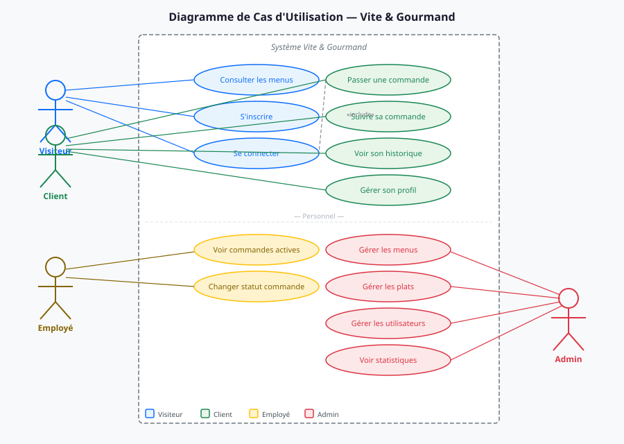
Ce diagramme montre ce qui se passe quand un client valide sa commande : le navigateur commence par appeler /api/livraison-prix pour afficher le récapitulatif en temps réel, puis quand le formulaire est soumis, le contrôleur Symfony calcule les prix finaux et persiste via Doctrine.
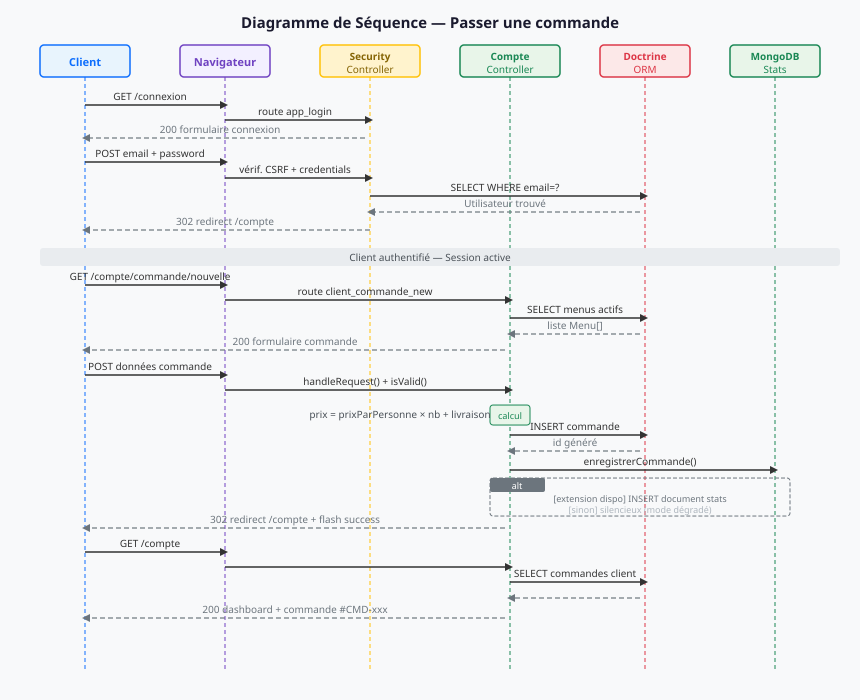
J'ai utilisé les migrations Doctrine pour créer les tables — je définis mes entités PHP avec les attributs #[ORM\...] et doctrine:migrations:diff génère le SQL. C'est plus propre qu'écrire le SQL à la main et ça garde un historique des changements de schéma. Voici un extrait des tables principales :
// migrations/Version20260625072933.php
public function up(Schema $schema): void
{
// Table des utilisateurs (clients, employés, admins)
$this->addSql('CREATE TABLE utilisateur (
id INT AUTO_INCREMENT NOT NULL,
email VARCHAR(255) NOT NULL,
password VARCHAR(255) NOT NULL,
nom VARCHAR(128) NOT NULL,
prenom VARCHAR(128) NOT NULL,
telephone VARCHAR(32) NOT NULL,
adresse VARCHAR(255) NOT NULL,
adresse_postale VARCHAR(16) NOT NULL,
ville VARCHAR(128) NOT NULL,
actif TINYINT NOT NULL,
role_id INT DEFAULT NULL,
INDEX IDX_1D1C63B3D60322AC (role_id),
PRIMARY KEY (id)
) DEFAULT CHARACTER SET utf8mb4');
// Table des commandes (pièce centrale du modèle)
$this->addSql('CREATE TABLE commande (
id INT AUTO_INCREMENT NOT NULL,
numero_commande VARCHAR(50) NOT NULL,
date_commande DATETIME NOT NULL,
date_prestation DATE NOT NULL,
heure_livraison VARCHAR(5) NOT NULL,
adresse_livraison VARCHAR(255) NOT NULL,
ville_livraison VARCHAR(128) NOT NULL,
nombre_personne INT NOT NULL,
prix_menu NUMERIC(8,2) NOT NULL,
prix_livraison NUMERIC(8,2) NOT NULL,
prix_reduction NUMERIC(8,2) NOT NULL,
prix_total NUMERIC(8,2) NOT NULL,
statut VARCHAR(64) NOT NULL,
pret_materiel TINYINT NOT NULL,
utilisateur_id INT DEFAULT NULL,
menu_id INT DEFAULT NULL,
INDEX IDX_6EEAA67DFB88E14F (utilisateur_id),
INDEX IDX_6EEAA67DCCD7E912 (menu_id),
PRIMARY KEY (id)
) DEFAULT CHARACTER SET utf8mb4');
// Table de liaison menu ↔ plat (relation N,N)
$this->addSql('CREATE TABLE menu_plat (
menu_id INT NOT NULL,
plat_id INT NOT NULL,
PRIMARY KEY (menu_id, plat_id)
) DEFAULT CHARACTER SET utf8mb4');
// Contraintes de clés étrangères
$this->addSql('ALTER TABLE utilisateur
ADD CONSTRAINT FK_1D1C63B3D60322AC
FOREIGN KEY (role_id) REFERENCES role (id)');
$this->addSql('ALTER TABLE commande
ADD CONSTRAINT FK_6EEAA67DFB88E14F
FOREIGN KEY (utilisateur_id) REFERENCES utilisateur (id)');
$this->addSql('ALTER TABLE commande
ADD CONSTRAINT FK_6EEAA67DCCD7E912
FOREIGN KEY (menu_id) REFERENCES menu (id)');
}
Les fixtures me servent à remettre la base dans un état connu d'un coup avec doctrine:fixtures:load. J'y ai mis les rôles, les thèmes, les 14 allergènes réglementaires, les horaires et les comptes de test — les allergènes surtout, ce serait pénible à ressaisir manuellement à chaque reset de la base.
// src/DataFixtures/AppFixtures.php
public function load(ObjectManager $manager): void
{
// Création des rôles
$roleAdmin = new Role();
$roleAdmin->setLibelle('administrateur');
$manager->persist($roleAdmin);
$roleEmploye = new Role();
$roleEmploye->setLibelle('employe');
$manager->persist($roleEmploye);
// Thèmes des menus
foreach (['Noël', 'Pâques', 'Classique', 'Événement'] as $libelle) {
$theme = new Theme();
$theme->setLibelle($libelle);
$manager->persist($theme);
}
// 14 allergènes réglementaires
foreach ([
'Gluten', 'Crustacés', 'Œufs', 'Poissons', 'Arachides',
'Soja', 'Lait', 'Fruits à coque', 'Céleri', 'Moutarde',
'Graines de sésame', 'Sulfites', 'Lupin', 'Mollusques'
] as $libelle) {
$allergene = new Allergene();
$allergene->setLibelle($libelle);
$manager->persist($allergene);
}
// Horaires d'ouverture (lun→sam ouvert, dim fermé)
foreach ([
1 => ['09:00', '18:00', false],
5 => ['09:00', '19:00', false],
6 => ['10:00', '17:00', false],
7 => ['00:00', '00:00', true], // fermé le dimanche
] as $jour => [$ouverture, $fermeture, $ferme]) {
$horaire = new Horaire();
$horaire->setJour($jour)
->setHeureOuverture($ouverture)
->setHeureFermeture($fermeture)
->setFerme($ferme);
$manager->persist($horaire);
}
// Compte administrateur
$admin = new Utilisateur();
$admin->setEmail('jose@vitegourmand.fr')
->setPassword($this->hasher->hashPassword($admin, 'Admin@2024!'))
->setNom('Dupont')->setPrenom('José')
->setActif(true)->setRole($roleAdmin);
$manager->persist($admin);
$manager->flush(); // un seul flush à la fin pour optimiser les requêtes
}
Pour les requêtes custom j'utilise le QueryBuilder de Doctrine avec setParameter() — les valeurs ne sont jamais collées directement dans la chaîne SQL. Exemple concret : récupérer les avis liés aux commandes d'un utilisateur donné.
// src/Repository/AvisRepository.php
/**
* Récupère les avis d'un utilisateur via ses commandes.
* La valeur $utilisateur est liée en paramètre — jamais interpolée
* dans la chaîne DQL, ce qui protège contre les injections SQL.
*/
public function findByUtilisateur(Utilisateur $utilisateur): array
{
return $this->createQueryBuilder('a')
->join('a.commande', 'c') // jointure avec la table commande
->andWhere('c.utilisateur = :user') // :user est un paramètre nommé
->setParameter('user', $utilisateur)// Doctrine lie la valeur de façon sécurisée
->orderBy('a.createdAt', 'DESC')
->getQuery()
->getResult();
}
// Autre exemple — recherche de menus avec plusieurs paramètres liés :
// $qb->andWhere('m.prixParPersonne <= :prix')
// ->setParameter('prix', $prixMax)
// ->andWhere('m.actif = :actif')
// ->setParameter('actif', true);
setParameter(), la valeur n'est jamais interprétée comme du SQL : le moteur reçoit la structure de la requête et la valeur séparément. Une valeur comme ' OR 1=1 -- reste juste du texte, elle ne s'exécute pas.
J'ai mis tout l'environnement sous Docker Compose pour que le projet soit reproductible sur n'importe quelle machine. Il y a trois services : PHP avec Symfony, MySQL pour les données principales, et MongoDB pour les stats de navigation. J'ai décalé les ports (8081, 3307, 27018) parce que sur ma machine j'avais déjà MySQL et MongoDB qui tournaient en local et ça rentrait en conflit.
# compose.yaml — configuration complète de l'environnement Docker
services:
# ── Service PHP (Symfony + FPM) ──────────────────────────────────────
php:
build: . # Dockerfile à la racine du projet
container_name: vitegourmand_php
ports:
- "8081:8081" # port exposé → port interne
volumes:
- .:/var/www/html # code source monté dans le conteneur
- /var/www/html/vendor # vendor géré dans le conteneur (perf)
environment:
APP_ENV: dev
DATABASE_URL: mysql://root:secret@db:3306/vite_et_gourmand?serverVersion=8.0&charset=utf8mb4
MONGODB_URI: mongodb://mongo:27017
MONGODB_DB: vite_et_gourmand_stats
depends_on:
db:
condition: service_healthy # attend que MySQL soit prêt
mongo:
condition: service_started
restart: unless-stopped
# ── Service MySQL ─────────────────────────────────────────────────────
db:
image: mysql:8.0
container_name: vitegourmand_db
environment:
MYSQL_ROOT_PASSWORD: secret
MYSQL_DATABASE: vite_et_gourmand
ports:
- "3307:3306" # 3307 évite le conflit avec MySQL local
volumes:
- db_data:/var/lib/mysql # persistance des données entre les redémarrages
healthcheck:
test: ["CMD", "mysqladmin", "ping", "-h", "localhost", "--password=secret"]
interval: 5s
timeout: 5s
retries: 10
restart: unless-stopped
# ── Service MongoDB (statistiques) ───────────────────────────────────
mongo:
image: mongo:7
container_name: vitegourmand_mongo
ports:
- "27018:27017" # 27018 évite le conflit avec MongoDB local
volumes:
- mongo_data:/data/db
restart: unless-stopped
# ── Volumes nommés (persistance) ─────────────────────────────────────────
volumes:
db_data:
mongo_data:
| Service | Image / build | Port exposé | Rôle |
|---|---|---|---|
| php | Dockerfile custom (PHP 8.3-fpm) | 8081 | Exécute Symfony, sert l'application |
| db | mysql:8.0 | 3307 | Base de données relationnelle |
| mongo | mongo:7 | 27018 | Base documentaire pour les statistiques |
| Étape | Commande |
|---|---|
| 1. Cloner le dépôt | git clone <url> vite-gourmand && cd vite-gourmand |
| 2. Démarrer les conteneurs | docker compose up -d --build |
| 3. Installer les dépendances | docker compose exec php composer install |
| 4. Exécuter les migrations | docker compose exec php php bin/console doctrine:migrations:migrate |
| 5. Charger les fixtures | docker compose exec php php bin/console doctrine:fixtures:load |
| 6. Ouvrir l'application | http://localhost:8081 |